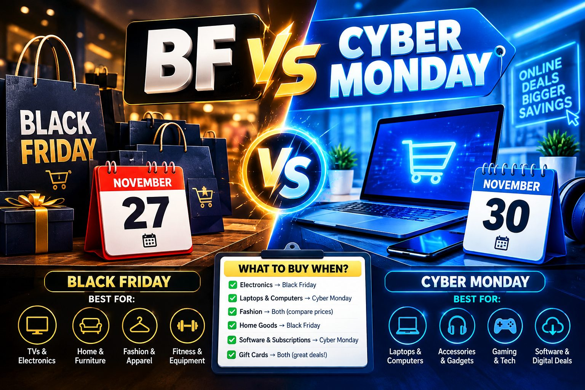

Black Friday vs Cyber Monday 2026: What to Buy When
Published October 12, 2026 · Updated October 12, 2026 · By EventBuzz Team

Every November, shoppers face the same question: buy it now on Black Friday, or wait for Cyber Monday? The two days have grown into a four-day weekend of deals — and in 2026, with early sales stretching across the whole month, the answer matters more than ever. The short version: Black Friday (Friday, November 27, 2026) wins for in-store categories and big-ticket items you want to see first; Cyber Monday (Monday, November 30, 2026) wins for online electronics and last-chance laptop deals. Here is the full breakdown so you can plan the weekend like a strategist instead of shopping it like a gambler.
The 2026 Holiday Shopping Calendar
Everything hinges on Thanksgiving, which sets the whole sequence:
- Thanksgiving (US): Thursday, November 26, 2026 — most major stores closed; sales live online from the evening.
- Black Friday: Friday, November 27, 2026 — early store openings; the deepest advertised in-store cuts.
- Small Business Saturday: Saturday, November 28, 2026 — local shops and neighborhood deals.
- Cyber Monday: Monday, November 30, 2026 — the biggest online shopping day; electronics and computers peak.
Many retailers now treat the entire stretch — plus the weeks before it — as one rolling sale. That means the calendar matters less as a set of separate events and more as a map of when each category peaks.
What Belongs on Your Black Friday List
Black Friday’s strengths are physical retail and categories where seeing the product matters:
- TVs: the deepest advertised cuts of the year, with the advantage of seeing screen quality in person.
- Toys: the big toy catalogs and doorbuster toy walls are a Black Friday tradition; popular toys sell out, so earlier is safer.
- Apparel and shoes: winter staples at genuine discounts, with fitting rooms available.
- Appliances: large and small appliances with in-store pickup, avoiding delivery uncertainty.
- Anything bulky: furniture, grills, and large items you can take home the same day instead of waiting on a truck.
What Belongs on Your Cyber Monday List
Cyber Monday’s strengths are pure e-commerce:
- Laptops and computers: online configurators and comparison tools make Monday the best day to spec and price a machine carefully.
- PC components and storage: SSDs, memory, and peripherals peak online.
- Small electronics and gadgets: earbuds, smart-home devices, and accessories with online-only coupon codes.
- Digital goods: software subscriptions, streaming bundles, and online courses — all inherently online purchases.
- Anything you missed Friday: retailers often extend or relaunch Friday deals online for a second chance.
How Prices Actually Move Across the Weekend
Here is what the weekend really looks like from the price side. Thursday evening: online deals go live, often matching Friday’s advertised prices. Friday: the widest selection at sale prices, plus in-store doorbusters. Saturday and Sunday: a lull — some deals continue, stock replenishes, and retailers watch what sold. Monday: a fresh wave of online-focused deals, strongest in computing and electronics.
The practical takeaway: a price you are happy with on Thursday evening is a deal. Waiting for Monday to save a few more dollars risks the item selling out, and the difference is rarely worth the gamble on must-have items. For nice-to-have items, waiting is fine — that is what wishlists are for.
Shipping Deadlines and Pickup Strategy
The weekend’s hidden variable is delivery. Ordering on Cyber Monday still leaves nearly four weeks before Christmas, so standard shipping is usually fine — but check each retailer’s holiday delivery guarantees, especially for gifts that must arrive by a specific date. The smarter move for bulky or urgent items: buy online, pick up in store. You lock in the online price, skip shipping fees and delivery uncertainty, and many stores hold pickup orders for days. For gifts shipping directly to recipients, order by early December to stay inside standard delivery windows, and always keep the tracking number until the gift is confirmed received.
The One-Week Hybrid Plan
- Early November: write your list with exact items and target prices; note current prices as your baseline.
- Thanksgiving (Nov 26): shop online in the evening — many Friday prices are already live.
- Black Friday (Nov 27): hit stores early only for limited-stock items; buy your in-store categories (TVs, toys, apparel, appliances).
- Weekend (Nov 28–29): pause. Review what you bought against the list; return anything impulse-bought while the window is fresh.
- Cyber Monday (Nov 30): buy your online categories (laptops, components, digital goods) and grab second-chance deals on anything missed.
- Early December: check price-match windows on everything you bought — claim the difference if prices dropped further.
The weekend strategist’s rule: Friday for the eyes, Monday for the cart — and a list for both days.
Frequently Asked Questions
When is Black Friday 2026 and when is Cyber Monday 2026?
Black Friday is Friday, November 27, 2026 — the day after Thanksgiving (Thursday, November 26). Cyber Monday is Monday, November 30, 2026, three days later.
What should I buy on Black Friday vs Cyber Monday?
Black Friday: TVs, toys, apparel, shoes, appliances, and anything bulky or worth inspecting in person. Cyber Monday: laptops, PC components, small electronics, and digital goods — categories that favor careful online comparison.
Are Cyber Monday deals better than Black Friday deals?
Neither is universally better — it depends on the category. Electronics and computing often peak Monday; TVs, toys, and apparel usually peak Friday. Track your specific items rather than trusting the day.
Do Black Friday deals sell out before Cyber Monday?
Popular items with limited stock can sell out on Friday, especially toys and doorbuster electronics. If an item is a must-have and hits your target price, buy it when you see it.
Should I shop online or in store on Black Friday?
Shop online Thursday evening for convenience; go in store Friday morning only for limited-stock doorbusters or items you need to see first. For bulky items, buy online and pick up in store to skip delivery uncertainty.
Conclusion
Black Friday and Cyber Monday are not rivals — they are two halves of one shopping weekend. Give Friday the categories that reward eyes and hands, give Monday the categories that reward research and comparison, and give both days the same disciplined list. That is how the weekend’s real savings are captured.
Plan the weekend, work the list — happy deal hunting.